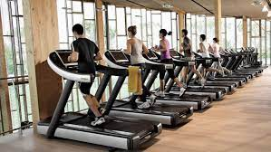
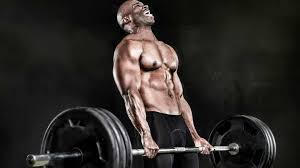
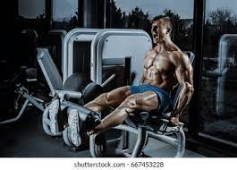
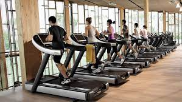
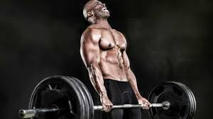
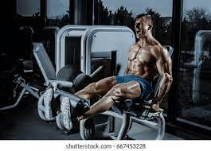
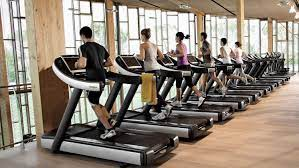
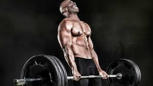
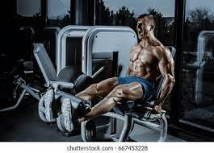
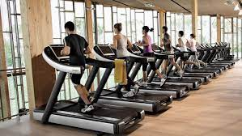
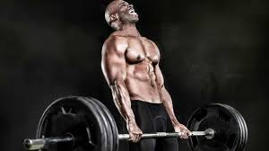
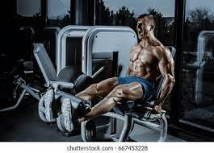
Zumba is a form of fitness class in which you burn off calories by dancing to different kinds of lively tunes, often Latin-American inspired such as salsa, merengue and samba, but also other types of modern music like hip hop and Bollywood music from the Indian film industry.
Treadmills provide outstanding cardiovascular exercises, which can significantly enhance your heart health. Thanks to their ability to maintain constant heart rates throughout the exercise. If you've high cholesterol or cardiovascular issues, this can be very beneficial.
Weight training is a common type of strength training for developing the strength, size of skeletal muscles and maintenance of strength. It uses the force of gravity in the form of weighted bars, dumbbells or weight stacks in order to oppose the force generated by muscle through concentric or eccentric contraction.
Leg workouts engage the major muscle groups of your body, which helps to improve overall athletic performance and support healthy movement patterns in your daily life. A strong lower body will also help to prevent injury and manage chronic conditions such as arthritis, heart disease, and diabetes.
To battle belly fat: Eat a healthy diet. Focus on plant-based foods, such as fruits, vegetables and whole grains, and choose lean sources of protein and low-fat dairy products. Limit added sugar and saturated fat, which is found in meat and high-fat dairy products, such as cheese and butter.
Cardio is shorthand for cardiovascular training, and it encompasses any exercise—such as running, cycling, or dancing—that elevates your heart rate. Cardio is also considered aerobic exercise, meaning it demands elevated oxygen flow, which causes you to breathe harder.
A lateral raise is a strength training shoulder exercise characterized by lifting a pair of dumbbells away from your body in an external rotation. Lateral raises work the trapezius muscle in your upper back as well as the deltoid muscle group in your shoulders—particularly the anterior and lateral deltoids.
To build six-pack abs, you need an exercise routine that includes both strength exercises and cardio. Plus, following a healthy diet, like eating more lean protein, whole grains, and vegetables can help you reach your six-pack goals.